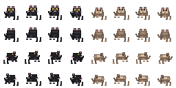

GATE 1 · PIXEL32 PET CANDIDATES
寵物方向與跳步候選
原創黑貓與 quokka 四方向候選。已核准靜態圖只提供物種參考；本圖集仍未核准，也未接入遊戲。
CANDIDATE · 未核准
讀取候選圖集…
檢視兩隻寵物完整圖集

圖集原生 256×128 px；黑貓佔前四欄，矮袋鼠佔後四欄；每一列依序為下、上、左、右方向。畫格大小 32×32 px。
GATE 1 · PIXEL32 PET CANDIDATES
原創黑貓與 quokka 四方向候選。已核准靜態圖只提供物種參考；本圖集仍未核准，也未接入遊戲。
讀取候選圖集…

圖集原生 256×128 px；黑貓佔前四欄，矮袋鼠佔後四欄；每一列依序為下、上、左、右方向。畫格大小 32×32 px。